|
defense |
"Uke No Gogensoku"
Shito-Ryu's Special Five Principles of Defense
DEMONSTRATED BY GENZO IWATA
SENSEI, 7TH DAN JKF SHITO-KAI
ASSISTED BY MURAYAMA ALONSO SENSEI, 4TH DAN JKF SHITO-KAI AND NAKAYAMA SENSEI
-
RAKKA (Flower Falling Down)
Concept of striking at the base of a tree with such tremendous force to knock the flowers (blossoms) off the branches. Hard blocking applying sudden maximum power with a twisting action executed to literally stop the opponent's attack and destroy his confidence.
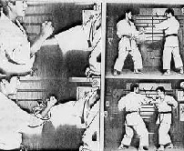
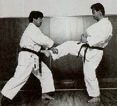
-
RYUSU (Flowing Water-like Movement or Fluid Motion)
Concept of soft blocking or absorbing the attack and re-directing it using circular or deflecting blocks or parrys, in a fluid movement.
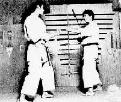
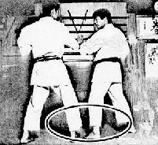
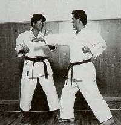
-
TENI (Taisabaki-like Body Movement )
Concept of shifting or turning away from opponent's attack or avoiding his attack by applying evasive body movement.
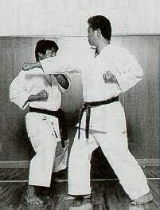
-
KUSHIN (Bending or Springing Action Originating in Knees)
Concept of an immediate shifting of stance from one type to another (e.g.- Moto dachi/Neko-ashi dachi/Moto dachi) or a reflexive darting away then returning back immediately type of body shifting from any angle.
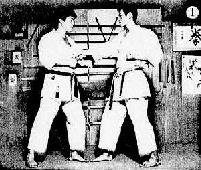
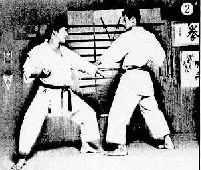
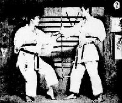
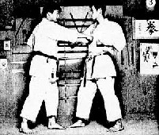
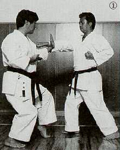
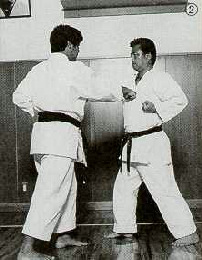
-
HANGEKI (Counter Attack or "Go No Sen")
Concept of generating a powerful attacking action as an effective counter defense (e.g.- Tsuki Uke or Wa Uke).
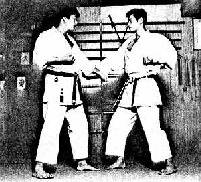
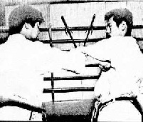
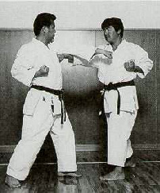
References/Bibliography
-
Photographs of Iwata Sensei and Murayama Sensei taken from Seikan Karate-do Magazine. Tokyo, Japan. Vol. 257 - December 1995.
-
Photographs of Iwata Sensei and Nakayama Sensei taken from Seikan Karate-do Magazine. Tokyo, Japan. Vol. 305 - July 1998.
-
Sells John. Shito-ryu Karate, Okinawa's Not So Hidden Secret: Karate Magazine Article.
-
Mabuni Kenei/Nakahashi Hidetoshi. Karate-do Shito-ryu. Paris, France: SEDIREP, 1989.
-
Moledzki Sam. Personal Data Archives.